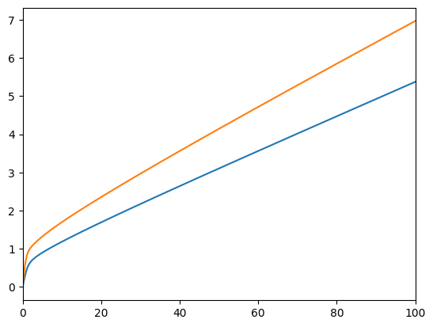
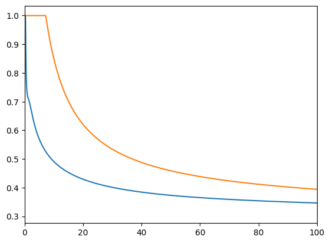
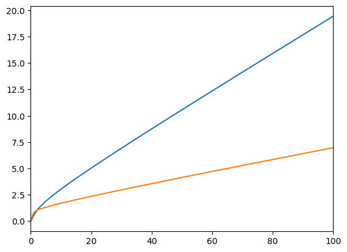

This page was generated from
examples/ConsWealthPortfolioModel/example_WealthPortfolio.ipynb.
Interactive online version: .
Download notebook.
.
Download notebook.
Interactive online version:
Multiplicative Wealth-in-Utility with Portfolio Choice#
This notebook only provides examples without explaining the model. It will be revised and expanded in the near future.
[1]:
from HARK.ConsumptionSaving.ConsPortfolioModel import PortfolioConsumerType
from HARK.ConsumptionSaving.ConsWealthPortfolioModel import WealthPortfolioConsumerType
from HARK.utilities import plot_funcs
[2]:
cycles = 0
port_agent = PortfolioConsumerType(cycles=cycles)
wealth_agent = WealthPortfolioConsumerType(
cycles=cycles,
WealthShare=0.5,
WealthShift=0.0,
)
[3]:
port_agent.solve()
# port_agent.completed_cycles
[4]:
wealth_agent.solve()
# wealth_agent.completed_cycles
[5]:
plot_funcs([wealth_agent.solution[0].cFuncAdj, port_agent.solution[0].cFuncAdj], 0, 100)

[6]:
wealth_agent.solution[0].cFuncAdj.y_list
[6]:
array([0.00000000e+00, 1.00000000e-03, 2.44807914e-02, 4.85083791e-02,
7.30732362e-02, 9.81321895e-02, 1.23602493e-01, 1.49363277e-01,
1.75261723e-01, 2.01125290e-01, 2.26775778e-01, 2.52039551e-01,
2.76763271e-01, 3.00807644e-01, 3.24057369e-01, 3.46443760e-01,
3.67916642e-01, 3.88434230e-01, 4.07979586e-01, 4.26601011e-01,
4.44311096e-01, 4.61127057e-01, 4.77083706e-01, 4.92242044e-01,
5.06661090e-01, 5.20350847e-01, 5.33414202e-01, 5.45855506e-01,
5.57758614e-01, 5.69109676e-01, 5.79966524e-01, 5.90429142e-01,
6.00495364e-01, 6.10200366e-01, 6.19553397e-01, 6.28605445e-01,
6.37386844e-01, 6.45926628e-01, 6.54248827e-01, 6.62366821e-01,
6.70290933e-01, 6.78093443e-01, 6.85752725e-01, 6.93279645e-01,
7.00683360e-01, 7.08013054e-01, 7.15278374e-01, 7.22450563e-01,
7.29556360e-01, 7.36670768e-01, 7.43713015e-01, 7.50736364e-01,
7.57776399e-01, 7.64759112e-01, 7.71800124e-01, 7.78810849e-01,
7.85845227e-01, 7.92917180e-01, 7.99991149e-01, 8.07144682e-01,
8.14290009e-01, 8.21546471e-01, 8.28794539e-01, 8.36168518e-01,
8.43549808e-01, 8.51053623e-01, 8.58590703e-01, 8.66239027e-01,
8.73952710e-01, 8.81754095e-01, 8.89670193e-01, 8.97642049e-01,
9.05781295e-01, 9.13969344e-01, 9.22317623e-01, 9.30762271e-01,
9.39312432e-01, 9.48034820e-01, 9.56837410e-01, 9.65814458e-01,
9.74922711e-01, 9.84131277e-01, 9.93560009e-01, 1.00309917e+00,
1.01278412e+00, 1.02267793e+00, 1.03269874e+00, 1.04289314e+00,
1.05329770e+00, 1.06384785e+00, 1.07458700e+00, 1.08555115e+00,
1.09667985e+00, 1.10800025e+00, 1.11957245e+00, 1.13132891e+00,
1.14327143e+00, 1.15549688e+00, 1.16792537e+00, 1.18056073e+00,
1.19346169e+00, 1.20662087e+00, 1.22000754e+00, 1.23363172e+00,
1.24758003e+00, 1.26177647e+00, 1.27622729e+00, 1.29096798e+00,
1.30603224e+00, 1.32137306e+00, 1.33699753e+00, 1.35294827e+00,
1.36924292e+00, 1.38584531e+00, 1.40276194e+00, 1.42002028e+00,
1.43765997e+00, 1.45564053e+00, 1.47397194e+00, 1.49266268e+00,
1.51179059e+00, 1.53129648e+00, 1.55118985e+00, 1.57148040e+00,
1.59220814e+00, 1.61338987e+00, 1.63499913e+00, 1.65704682e+00,
1.67954310e+00, 1.70253807e+00, 1.72602976e+00, 1.75000388e+00,
1.77447233e+00, 1.79944620e+00, 1.82496456e+00, 1.85104947e+00,
1.87767588e+00, 1.90484874e+00, 1.93259109e+00, 1.96091528e+00,
1.98989036e+00, 2.01948454e+00, 2.04970526e+00, 2.08056754e+00,
2.11208622e+00, 2.14427797e+00, 2.17721009e+00, 2.21085439e+00,
2.24522259e+00, 2.28033052e+00, 2.31619563e+00, 2.35283705e+00,
2.39029159e+00, 2.42859577e+00, 2.46773325e+00, 2.50772361e+00,
2.54858565e+00, 2.59034182e+00, 2.63301227e+00, 2.67662354e+00,
2.72124040e+00, 2.76683726e+00, 2.81343783e+00, 2.86106605e+00,
2.90974393e+00, 2.95949793e+00, 3.01035260e+00, 3.06232115e+00,
3.11548979e+00, 3.16983823e+00, 3.22539539e+00, 3.28219020e+00,
3.34025104e+00, 3.39960795e+00, 3.46029229e+00, 3.52233573e+00,
3.58577066e+00, 3.65067388e+00, 3.71704347e+00, 3.78490819e+00,
3.85430387e+00, 3.92526618e+00, 3.99783338e+00, 4.07204383e+00,
4.14793657e+00, 4.22555359e+00, 4.30493534e+00, 4.38612846e+00,
4.46921899e+00, 4.55420673e+00, 4.64113864e+00, 4.73006233e+00,
4.82102603e+00, 4.91408067e+00, 5.00927808e+00, 5.10667234e+00,
5.20631908e+00, 5.30827412e+00, 5.41259728e+00, 5.51934930e+00,
5.62859109e+00])
[7]:
plot_funcs(
[wealth_agent.solution[0].ShareFuncAdj, port_agent.solution[0].ShareFuncAdj],
0,
100,
)

[8]:
plot_funcs(
[wealth_agent.solution[0].vPfuncAdj.cFunc, port_agent.solution[0].vPfuncAdj.cFunc],
0,
100,
)

[ ]: